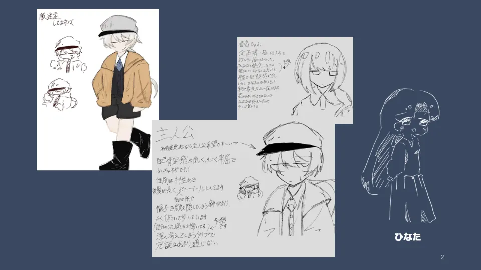

新しいゲームプロジェクトが始動しました！
2026年11月14日 / 執筆: 安部葉月
このサークルで新たなゲーム企画が始動しました！
「星空のターミナル」というタイトルです
主人公・春香とその親友・ひなたの、ちょっとしっとりストーリー！
なお、この企画は音楽アーティスト・Ishikura Toya氏の「loved you」とのタイアップ企画です
楽曲との関わりのあるストーリーになる予定なので、お楽しみに！
ディレクター・シナリオ：安部葉月
プログラマー：rita、ヌーと
イラスト：レシートの死神
サウンド：tomo